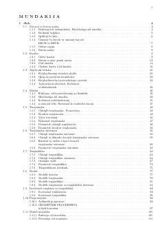

M11996-2007 yillar oralig'idagi matematika testlari va ularning yechimlari to'plami.
Ushbu qo'llanma matematika fanidan 1996-2007 yillarda o'tkazilgan test sinovlari va masalalar yechimlarini o'z ichiga oladi. Kitobda natural sonlar, kasrlar, tenglamalar, tengsizliklar va funksiyalar kabi mavzular bo'yicha batafsil misollar keltirilgan. Abituriyentlar va o'qituvchilar uchun mo'ljallangan muhim o'quv qo'llanmadir.